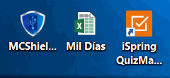
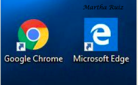
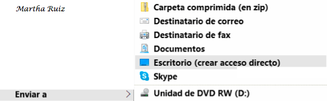
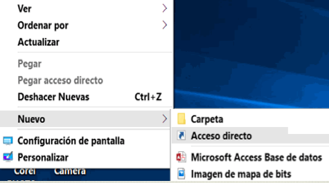
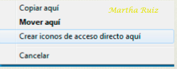
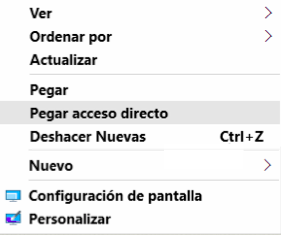

No está nunca de más repasar un concepto: un icono es una pequeña imagen que representa a un archivo o programa. Los iconos nos sirven para identificar de qué tipo de archivo se trata y con qué programa funciona. Por ejemplo, los documentos de Microsoft Word aparecen todos con el icono de Word. En el caso de los archivos ejecutables, los iconos suelen tener una imagen distinta para cada programa. En la siguiente imagen tenemos tres tipos de iconos en el siguiente orden: uno de programa, otro de archivo (de Excel) y un acceso directo a un programa.

Los accesos directos son un tipo de archivo cuyo objetivo es abrir de forma inmediata el archivo al que está vinculado, ya sea un ejecutable, una carpeta, una imagen, un documento, etc. Los accesos directos los podemos crear en cualquier parte, y los distinguimos porque, aunque el icono se puede personalizar, tienen un pequeño cuadradito con una flecha en su parte inferior izquierda. Por ejemplo, cuando instalamos un programa en Windows 10, lo normal es que todos sus archivos se instalen en una carpeta Archivos de programa de tu disco duro. Pero cuando queremos ejecutar la aplicación, no vamos a esa carpeta cada vez a buscar el archivo ejecutable, ya que en el proceso de instalación se crean también accesos directos en el Escritorio y en una carpeta en Todas las aplicaciones, en el menú Inicio.

Por eso, aunque los accesos directos apuntan al archivo que ejecutan, son independientes, y podemos borrarlos sin que eso borre el archivo vinculado.
Para abrir un Acceso directo, igual que con otro tipo de archivo, basta con hacer doble clic sobre su icono.
Ahora bien, la instalación de programas no es la única vía para que se generen accesos directos. Nosotros podemos crear nuestros propios iconos que apunten a programas o archivos y ubicarlos donde los necesitemos. Disponemos de varias formas diferentes para crear accesos directos, vamos a ver algunas de ellas.
Mediante el menú Enviar a
- Seleccionar el programa o archivo del cual queremos crear un acceso directo.
- Pulsar el botón derecho del ratón y seleccionar la opción Enviar a y luego elegir Escritorio (crear acceso directo).

Desde el Escritorio
- Sobre el Escritorio pulsa con el botón derecho del ratón.
- Seleccionar Nuevo y luego elegir Acceso directo.
- Pinchar sobre el botón Examinar para buscar un programa, archivo o carpeta.
- En el cuadro de diálogo Buscar archivos o carpetas seleccionar la unidad deseada y buscar el archivo o carpeta del que necesitamos un acceso directo.
- Después de seleccionarlo, pulsar Aceptar.
- Pulsar Siguiente.
- Darle el nombre al Acceso directo que acabamos de crear.
- Pulsar Finalizar.

Arrastrando.
- Arrastrar el archivo o la carpeta hasta el escritorio, pero no de la forma habitual, con el botón izquierdo, sino con el botón derecho del ratón.
- Cuando soltemos el botón aparecerá un menú contextual. Elegir lo que más nos interese, en este caso Crear iconos de acceso directo aquí.

Copiando el archivo o carpeta
- Hacemos clic con el botón derecho sobre el archivo o carpeta.
- Aparece un menú contextual del archivo, seleccionaremos Copiar.
- Volvemos al Escritorio y pulsamos con el botón derecho sobre él.
- Aparece el menú contextual del Escritorio.
- Pulsamos la opción Pegar acceso directo.
